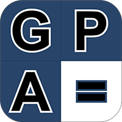

GPA Calculator
A palavra GPA é acrônimo de Grade Point Average (Média de Notas), formato de notas utilizado comumente nos Estados Unidos da América, Reino Unido e entre outros, o valor da GPA poderá receber um valor de 1.0 até 4.0, em Harvard por exemplo, a média dos alunos é de 3.66, uma nota que é equivalente a 9 e 10 em nosso sistema.
O Software GPA Calculator foi desenvolvido para suprir a demanda de um certo grupo de brasileiros que tinham o objetivo de estudar fora do Brasil, e precisavam fazer a conversão da nota em formato brasileiro, para um formato internacional.
Angell Belger teve a iniciativa de desenvolver o software por conta própria durante o período de mentoria com Matheus Tomoto, o software é elementar, mas cumpri com sua função básica de lhe entregar um valor aproximado do real, já que algumas Universidades possuem alguns critérios bem específicos e desconhecidos.